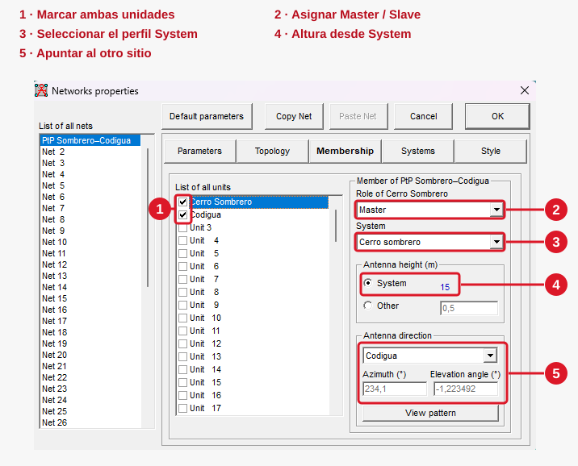
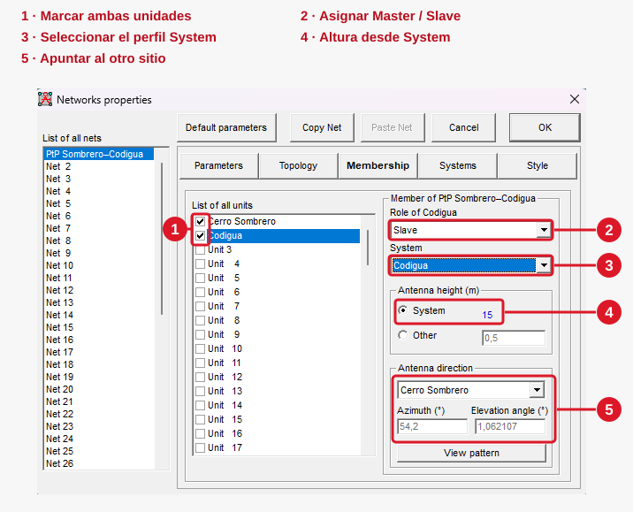

Capítulo 02 · Módulo 06
Membership: roles, altura y orientación.
Asignar los perfiles de los dos sitios y orientar sus antenas una hacia la otra.
Seleccionar la red y preparar las dos unidades
Después de configurar los perfiles en Systems, abre Membership y selecciona la red PtP Sombrero–Codigua en la lista izquierda. Aquí asignaremos los roles, el sistema de cada extremo, su altura y la dirección de las antenas en una sola pasada.
Los cinco pasos de la configuración
- Marca las casillas de Cerro Sombrero y Codigua. Así quedan incluidas en la red. Después selecciona la fila del sitio que vas a configurar; los campos de la derecha pertenecen a esa unidad.
- Asigna Role. Cerro Sombrero será Master y Codigua será Slave.
- Selecciona su System. Para la unidad Cerro Sombrero elige el perfil Cerro sombrero; para la unidad Codigua, el perfil Codigua. Son los que preparamos en Systems.
- En Antenna height, marca System. La unidad tomará los 15 m sobre el terreno definidos en su perfil. Comprueba que el valor mostrado sea 15 en los dos sitios.
- En Antenna direction, elige el otro extremo. Cerro Sombrero debe apuntar a Codigua y Codigua a Cerro Sombrero. Revisa los ángulos mostrados para cada unidad.
Cerro Sombrero · Master hacia Codigua

Codigua · Slave hacia Cerro Sombrero

Valores de ambos extremos
| Campo | Cerro Sombrero | Codigua |
|---|---|---|
| Casilla de la unidad | Marcada | Marcada |
| Role | Master | Slave |
| System | Cerro sombrero | Codigua |
| Antenna height | System · 15 m | System · 15 m |
| Antenna direction | Codigua | Cerro Sombrero |
| Azimuth mostrado | 234,1° | 54,2° |
| Elevation angle mostrado | −1,223492° | 1,062107° |
Qué controla cada campo
Role define Master o Slave. System asigna el perfil de radio y antena. La opción System dentro de Antenna height indica que la altura se toma de ese perfil; no es otro nombre de sistema.
Si necesitas cambiar la altura del escenario, modifica el perfil correspondiente en Systems y comprueba de nuevo el valor que muestra Membership con System seleccionado.
Orientar las antenas entre sí
Al elegir el sitio de destino en Antenna direction, el programa muestra el azimut y el ángulo de elevación correspondientes. El azimut es la dirección horizontal; el ángulo de elevación indica la inclinación vertical.
Los ángulos de la tabla son los que aparecen en estas capturas para las ubicaciones del caso. Conserva la selección del sitio opuesto en cada extremo; si cambian las coordenadas o las alturas, revisa la orientación calculada. El botón View pattern permite consultar el patrón orientado.
Comprobar y guardar
- La red seleccionada es PtP Sombrero–Codigua y las dos casillas permanecen marcadas.
- Cerro Sombrero usa Master y el perfil Cerro sombrero; Codigua usa Slave y el perfil Codigua.
- En ambos sitios, Antenna height tiene System seleccionado y muestra 15 m.
- Cada antena apunta hacia el otro sitio.
Confirma con OK y guarda el proyecto. Con esta asignación queda preparado el caso para la comprobación del enlace, que veremos al final del recorrido.